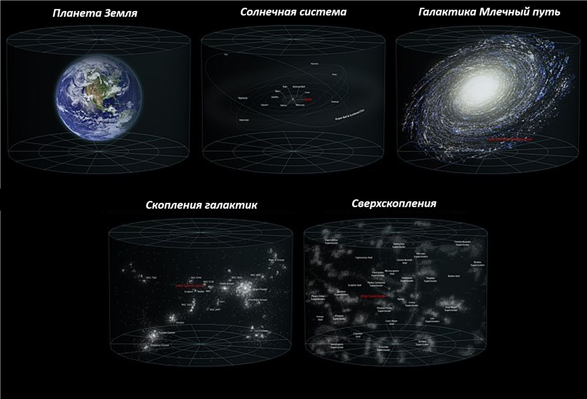

Галактика


За время существования космологии и астрофизики появилось несколько классификаций
галактик, в основном они сводимы к морфологии, т.е. делят наблюдаемые объекты по их
внешнему виду. Наиболее известная из них –
морфологическая классификация Хаббла, разработанная американским астрономом
Эдвином Хабблом ещё в 1926 г., и дополненная им же в 1936 г. Несколько
модифицированная она во многом остается актуальной и по сей день.

Классификация Хаббла предполагает следующие типы:
- шарообразные эллиптические галактики, имеющие относительно равномерное
распределение звёзд без наличия явного ядра. Обозначение – E0 – E7
 - галактики дискообразной формы, называемые линзообразными или линзовидными
(добавлена Хабблом самой последней в 1936 году). Обозначение – S0
- галактики дискообразной формы, называемые линзообразными или линзовидными
(добавлена Хабблом самой последней в 1936 году). Обозначение – S0
 - спиральные галактики, состоящие из центрального звездного «уплотнения»,
т.н. балджа, к которому добавляются внешний диск с закручивающимися рукавами.
Обозначение – Sa, Sb, Sc, Sd
- спиральные галактики, состоящие из центрального звездного «уплотнения»,
т.н. балджа, к которому добавляются внешний диск с закручивающимися рукавами.
Обозначение – Sa, Sb, Sc, Sd
- спиральные галактики с перемычкой, обозначение – SBa, SBb, SBc, SBd.
- неправильные (также известные как нерегулярные галактики) не имеют четкой
симметричной структуры. Обозначения – IrrI (содержат элементы спиральной структуры)
и IrrII (совершенно неправильной формы).
Сегодня в науке преобладает позиция, что эволюция галактик двигается от спиральной
формы к эллиптической, хотя сам Хаббл считал ровно наоборот. Для спиральных галактик
характерна форма при которой в центре расположен галактический диск, а по краям от
него отходят спиральные рукава. Одной из спиральных галактик является и наша с вами
галактика – Млечный путь (спиральная с перемычкой).
 В Местной группе, к которой относится Млечный путь, представлены галактики разных
морфологических типов: спиральные галактики, неправильные галактики и др.
Количественно больше всего представлено таких объектов как карликовые эллиптические
и карликовые сфероидальные галактики. И поскольку большинство наблюдаемых нами
галактик являются карликовыми, астрономы пришли к выводу, что большую часть видимой
Вселенной составляют именно объекты подобного типа.
В Местной группе, к которой относится Млечный путь, представлены галактики разных
морфологических типов: спиральные галактики, неправильные галактики и др.
Количественно больше всего представлено таких объектов как карликовые эллиптические
и карликовые сфероидальные галактики. И поскольку большинство наблюдаемых нами
галактик являются карликовыми, астрономы пришли к выводу, что большую часть видимой
Вселенной составляют именно объекты подобного типа.